A Tale not so Tall
Let's recount the days from the tale.
Avast, me hearties! There I was, sailin' the mighty Pridwen on a calm day, with me matey off for a spell. I, the captain, sailed solo, headin' south as the waters shimmered like gold. But then, the tides turned foul. The sea turned black as sin, and I knew me fate was sealed. Aye, the kraken attacked, its tentacles as thick as the masts! Loaded me cannons and let loose a barrage from me Brigantine, from both sides and every cannon we had! Tentacle after tentacle, I fought! On the horizon, the fins of the megalodon circled, waitin' to feast on the victor. I battled on, until I ran out of shot and chain, and then I fought with me trusty flintlock and sword till they dulled! The Pridwen groaned in agony as I rushed below to bail her out, but 'twas too late, she was lost. With naught but a rowboat as me liferaft, I rowed through the inky depths, the megalodon's fin nearly takin' me with it, but I rowed on. Spotted a piece of cargo floatin' by and added it to me boat, still rowin', back to Port Merrick. Night was near as I returned, and there, I spied a crew of pirates offloadin' their spoils from The Maidan Voyage. In me desperation, I nicked a valuable skull and sold it quick for some coin. Felt a pang of guilt, I did, but offered to lend a hand aboard their ship. Little did I know, 'twas only the start of me adventure on the high seas!
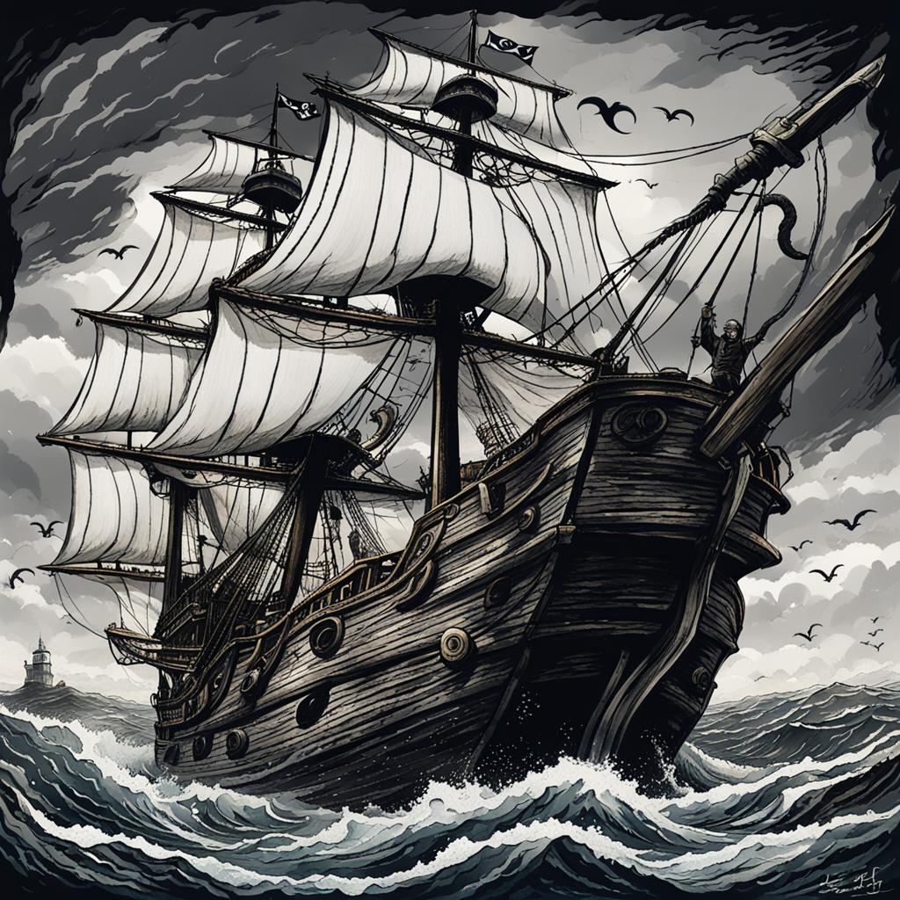We set sail eastward this time, and 'twas then we stumbled upon a shipwreck. With me mighty lungs and the crew, we dove into the depths, fendin' off sharks as we plundered chests, gold, chalices, skulls, and mermaid gems. As we made off with our loot, a megalodon circled, but we outpaced the beast, slippin' under the Stone Arch to shake him off. To the North and East, we spied Sloops, rival emissaries, as we hoisted our plunder aboard. Eastward we sailed, where the toughest pirates reside, the Reapers. Near their outpost, we spotted a lone slooper unloadin' his ill-gotten gains. 'Twas then I conceived a wicked plan. While the captain helmed The Maidan Voyage, I kept watch from the crows nest with me sharp eye and steady shot. Spied a gunpowder keg stashed in their hold, an odd place indeed. And a rowboat facin' the Reaper ship, armed with a cannon. I proposed to the captain to swim over, plant the keg, and blast it below decks. Heart poundin', I swam over, climbed aboard, and set the keg in their hold. Lit the fuse and leapt into the water as the explosion rocked the ship. Tossed some fire bombs for good measure afore takin' to the rowboat and lettin' loose the cannons. Sold off the loot we pilfered, then rested for the night at the Reaper port. And lo, a stray pirate joined our crew. Aye, 'twas a day of daring deeds and newfound allies. Onward we sail, ever seekin' the next adventure on the boundless sea.
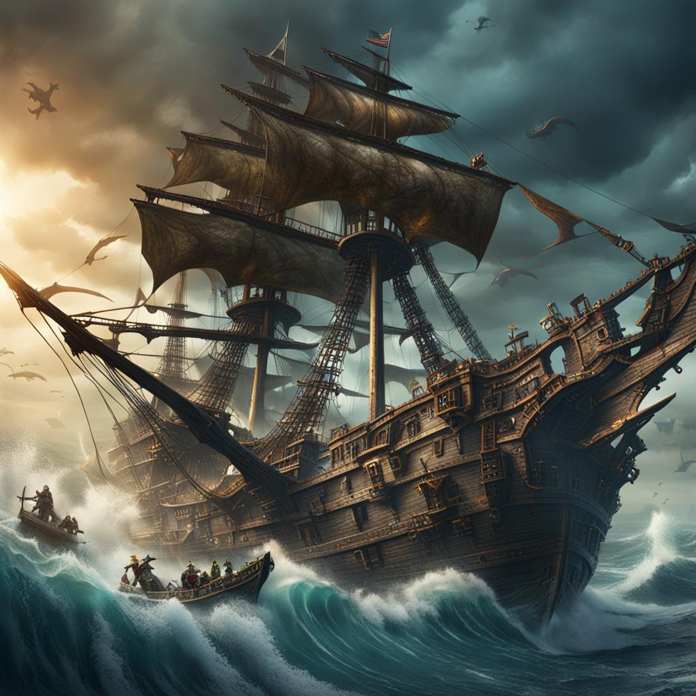As the sun kissed the horizon, we embarked on yet another plunderin' expedition, seekin' fortune amidst the wreckage of the deep. 'Twas much the same as afore - divin' into the depths, wrestlin' with sharks, and haulin' chests brimmin' with riches aboard our vessel. But this day, we added a twist to our exploits. While we rested betwixt the plunder, we struck up a merry tune upon our drums, bangos, accordion, and hurdy-gurdy, fillin' the salty air with the strains of the classic shanty "Bosun Bill," lamentin' that poor soul's fate. Then, like a gift from the sea gods, we spied a rival emissary anchored at a distant isle, their sails billowin' in the breeze like a beacon of opportunity. With stealth and cunning, we closed in on the unsuspectin' foe, our cannons roarin' to life as we approached. A bold pirate among us, braver than most, shot himself from a cannon in a daring attempt to board the enemy vessel. Alas, his aim fell short, and he plummeted into the churning waves below. Meanwhile, me pirate mate set the rival ship ablaze, the flames lickin' at the wooden hull like the wrath of Neptune himself. As I clambered aboard to engage in a good ol' swashbucklin' brawl, I realized me trusty cutlass lay dull from the previous day's battle. Yet, the thrill of combat surged through me veins as I clashed blades with the rival captain amidst the inferno. But victory was not to be ours this day. As the flames engulfed the ship and the smoke choked the air, both captains tumbled overboard, unconscious and at the mercy of the merciless sea. When I came to, I found meself stranded on a forsaken isle, separated from me newfound crew and adrift in a sea of uncertainty.
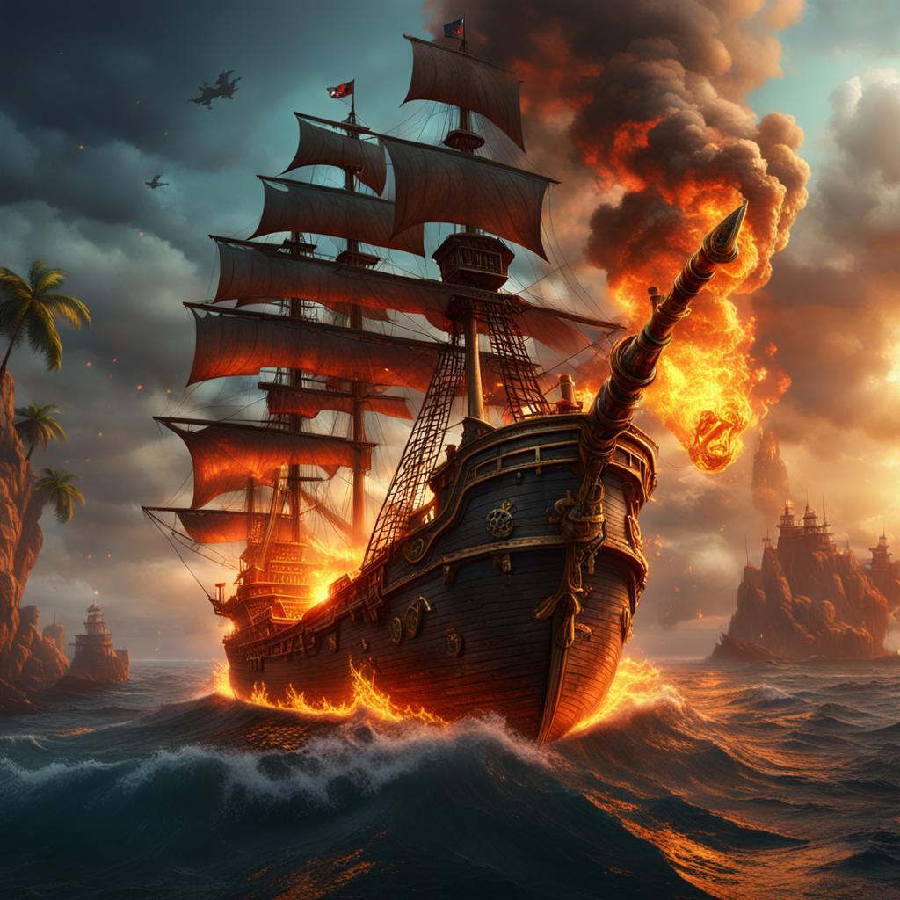Arrr, as the days stretched long and me provisions dwindled, I found meself marooned upon that forsaken isle, with naught but snakes to eat and coconuts to quench me thirst. Yet, I made the most of me situation, explorin' every nook and cranny of that horseshoe-shaped land. 'Twas by the bridge, amidst the stone hill arches, that fortune smiled upon me once more. A cannon and a box lay waitin', the box filled with flares to light the darkness. Joy filled me heart, and I danced and sang the tune of Bosun Bill, me spirits buoyed by the promise of rescue. In the dead of night, as the fog draped the water like a cloak, lanterns flickered in the distance. Armed only with me trusty blade, I knew this could be me salvation or me doom. With a prayer on me lips, I fired a flare into the night sky, and lo and behold, 'twas me mateys aboard The Maidan Voyage, towin' a fixed-up brig they'd acquired on their journey, a vessel as proud and noble as the Pridwen of old. With joyous shouts and embraces, we reunited under the starry sky, choosin' a flag and a name for our newfound fleet. Sailed under one banner we did, with me at the helm of the new Pridwen. We divvied up the crew between the brigs, anchored for the night, and celebrated our reunion with drink and revelry. Aye, 'twas a night to remember, as we sailed forth into the unknown, united in our quest for adventure and fortune upon the boundless sea.
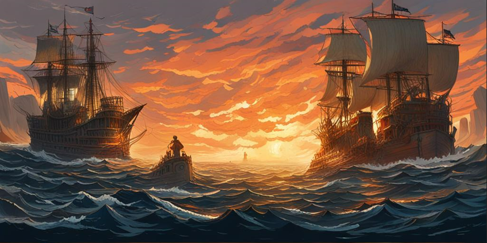As the dawn broke, we cast off our anchors and set sail once more, me at the helm of the mighty Pridwen. With full sails billowin' in the wind, The Maidan Voyage followed close behind, their crew jolly and ready for whatever the sea might throw our way. But then, a bit of mischief ensued. The crew of The Maidan Voyage, in their merriment, decided to harpoon our stern for a bit of sport, much to the amusement of all aboard. Aye, 'twas a sight to behold, the laughter echoin' across the waves as we sailed on. Yet, our joy turned to trepidation as dark clouds loomed on the horizon, heraldin' the approach of a fierce storm. And just when we thought our troubles couldn't multiply further, another megalodon appeared, a monstrous twin of the beast that had laid waste to the Pridwen. 'Twas clear that justice needed to be served, and so we turned our ships to face the creature head-on. I hurled me harpoon, but alas, it snapped under the strain, and the beast slipped away into the depths, evadin' our grasp. With the storm worsenin', we decided 'twas best to seek shelter in calmer waters. Stumblin' upon a wreck near a small island, we anchored our ships, preparin' to weather the tempest. But fate had other plans, as one of our mates tumbled into the churning waters, and in our haste to anchor, our ships bumped together, causin' naught but cosmetic damage. Yet, with spirits undaunted, we welcomed our mate back aboard, albeit a tad wetter than before. And so, we dropped anchor off the small island, awaitin' the break of day so we could dive into the depths and plunder the treasures of the nearby shipwreck come the morrow.
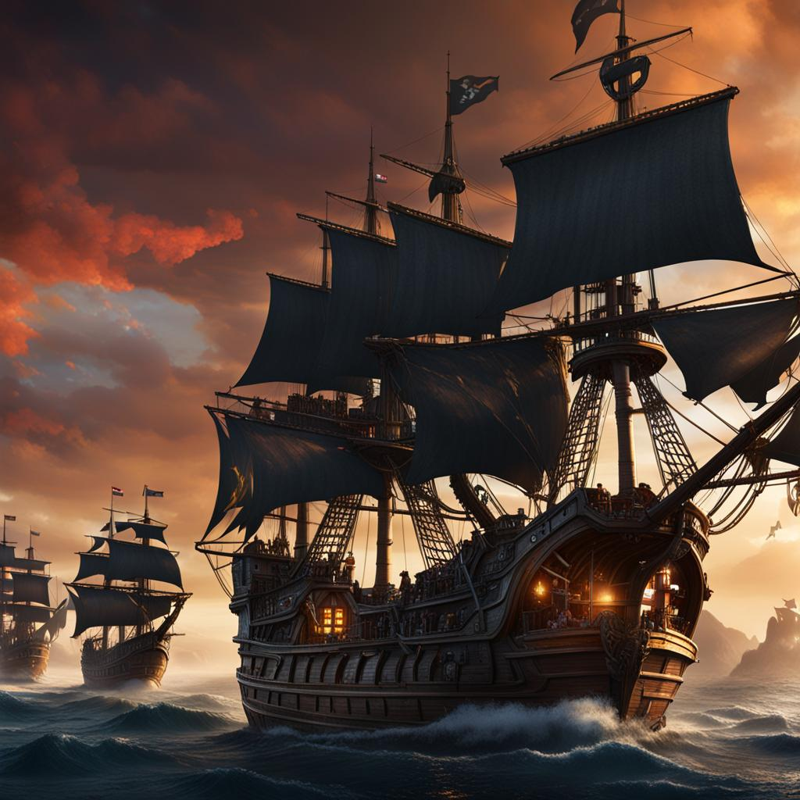With the dawn breakin', we plunged into the depths once more, discoverin' a bounty beyond our wildest dreams. Chests of gold, chalices gleamin' with jewels, and relics of ages past filled our hands and our hearts with glee. 'Twas so much that both ships overflowed with treasure, weighin' down the Pridwen 'til she nearly sank into the depths herself, yet still she stayed afloat, her spirit unbroken. As we set sail for the nearby outpost to sell our plunder, fate smiled upon us once more, leadin' us to another wreck teemin' with riches. With one mate sailin' ahead to offload our spoils from The Maidan Voyage, I helmed the Pridwen with a skeleton crew, while the rest of me mates dove into the depths to claim our prize. 'Twas a sight to behold as we returned to port, our ships laden with treasure beyond compare. Workin' together, we unloaded the riches from the Pridwen, joinin' forces to sell our loot and reapin' the rewards of our daring escapades upon the sea. But as night fell and the stars danced in the sky, we realized we had kept a special treasure hidden amidst our spoils - fireworks aplenty! With laughter and merriment, we set the night ablaze with colors and shapes, drinkin', singin', and revelin' in the bonds of friendship forged amidst the trials and triumphs of the open sea. Aye, 'twas a night to remember, as we celebrated our newfound wealth and camaraderie under the twinklin' stars above.
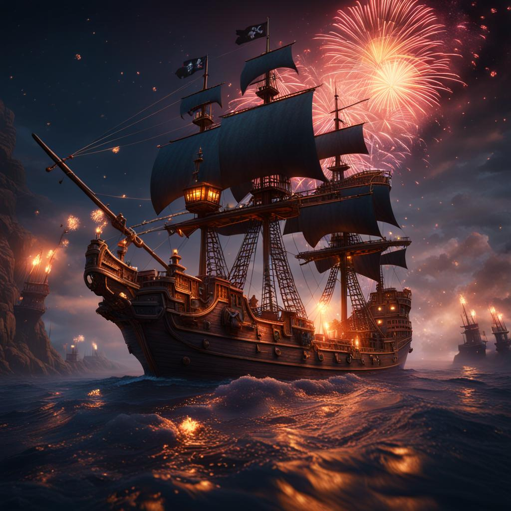Arr, me hearties, gather round and listen close to the tale of Day 7, a day marked by camaraderie and fortune on the vast expanse of the ocean blue. 'Twas I, along with me trusty companions Chaya and Ark, sailing the briny deep as we always do. But this day held a twist, for a new lass had joined our crew, a maiden of the sea named Topenga, eager and green to the ways of piracy. As we set sail, a sloop loomed on the horizon, making its way into port. With a daring spirit, I launched meself from the cannon's mouth, landing in the water with a splash. With a makeshift cone for speaking, I hailed the sloop, offering greetings and proposing an alliance. But alas, they were weary and sought solace in the comforts of the tavern, declining our offer. Undeterred, I swam back to shore, but as fate would have it, the weary sailors arrived at the port soon after. Seizing the opportunity, I approached them once more, suggesting that since they were to remain ashore for a spell, might they spare some supplies for me crew? And by Davy Jones' locker, they proved to be generous souls indeed! They bestowed upon us a bounty of cannonballs and planks, enough to make even Neptune himself envious. With hearts full of gratitude, we bid our newfound friends farewell and set sail once more, guided by a compass provided by the kind-hearted sailors. It pointed us towards untold riches, promising a voyage filled with adventure and plunder aplenty. 'Twas a day to be remembered, a testament to the bonds forged on the high seas and the generosity that can be found even amongst the most rugged of pirates. And so we sailed on, fueled by the spirit of camaraderie and the promise of treasure on the horizon.
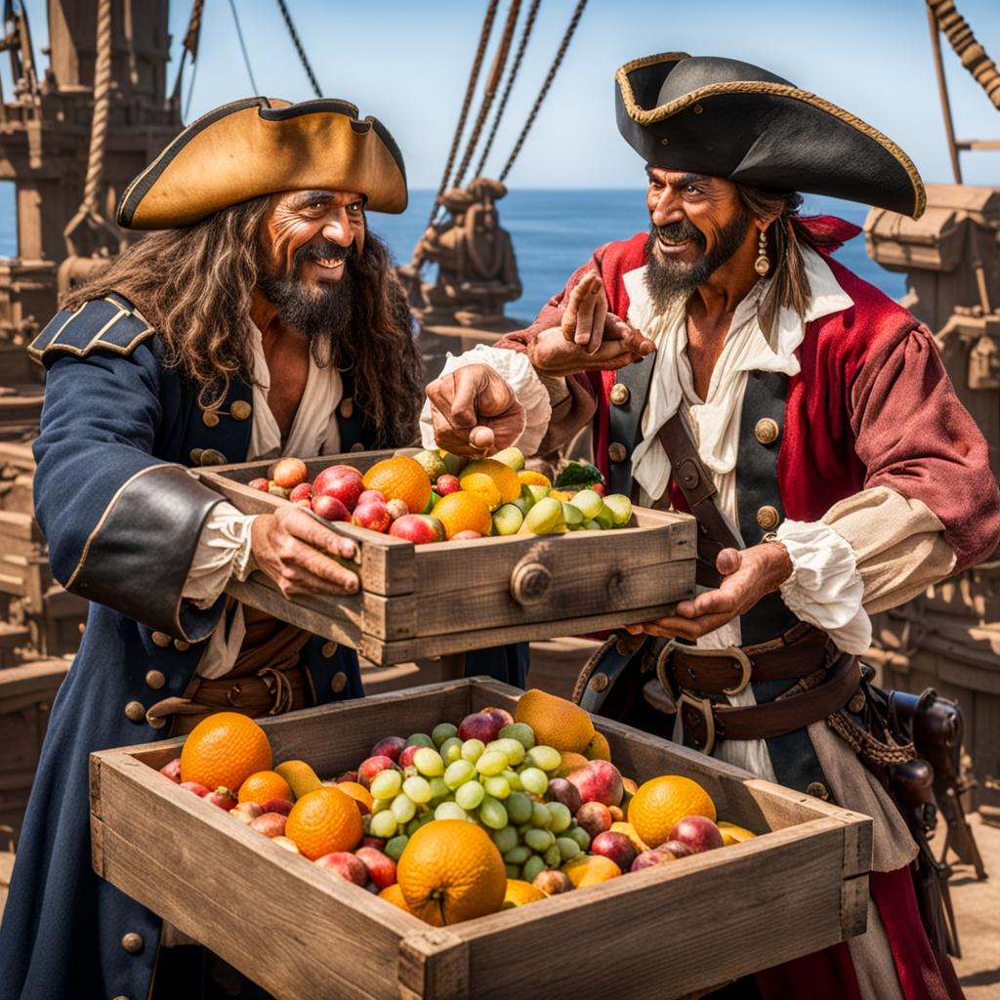On the eighth day of our daring expedition, we set our sights upon a nearby island, its silhouette beckoning like a siren's call amidst the vast expanse of the ocean. As our sturdy vessel neared the shore, the air became pregnant with the scent of adventure, mingling with the salty tang of the sea. With hearts pounding in anticipation, we dropped anchor and prepared to explore the mysteries that awaited us. Stepping onto the soft, sandy shores, we found ourselves surrounded by a veritable paradise of abundance. Trees heavy with ripe fruits swayed gently in the tropical breeze, their vibrant hues a feast for the eyes. Nearby, bubbling springs offered sweet, refreshing nectar, quenching our thirst and invigorating our spirits for the journey ahead. Crates and chests lay scattered about, their contents unknown but promising untold riches to those brave enough to uncover them. Yet amidst this bounty lay a challenge of a different sort - snake baskets, scattered like forgotten relics of a bygone era. Curled within their woven confines were serpents, their sinuous forms coiled and ready to strike at the unwary. With deft hands and nerves of steel, we approached these slithering guardians, seizing two of their number to add to our collection. Venturing deeper into the heart of the island, we encountered a sight that took our breath away - a magnificent waterfall, its crystalline waters cascading from dizzying heights like a silver ribbon unfurled from the heavens. The roar of its descent echoed through the lush foliage, filling us with a sense of wonder and awe. At its base lay a tranquil pond, its surface shimmering in the dappled light, a serene oasis amidst the rugged terrain. Undeterred by the dangers that lurked in the shadows, we pressed onward, our footsteps echoing against the ancient stone. With each passing moment, the island revealed its secrets, each more wondrous than the last. Yet as night descended and the stars painted patterns across the velvet sky, we knew it was time to return to our ship, laden with the spoils of our adventure. With the serpents safely stowed and the treasure securely locked away, we set sail once more, guided by the compass's mystical guidance. As the island faded into the distance behind us, we carried with us memories of a day filled with discovery and wonder, eager to chart a course towards the next chapter of our epic tale upon the high seas.
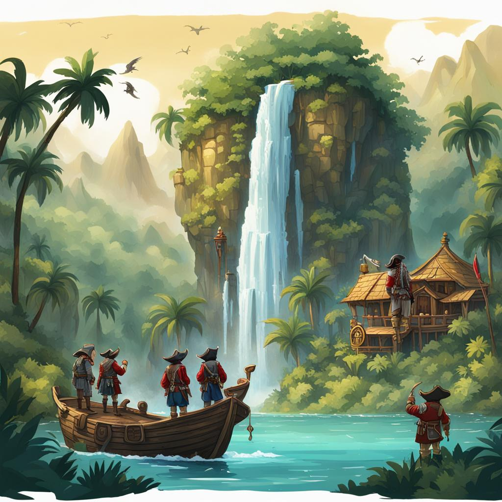As dawn broke on Day 9 of our seafaring saga, we found ourselves faced with a dilemma that would test the mettle of even the most seasoned of pirates. Nestled upon a remote island lay a reaper's chest, a coveted and perilous treasure that would surely draw the attention of rivals and rogues alike. Knowing the danger it posed, we made a bold decision to leave it be, opting instead to bury it and chart a map for future plunder. With the chest's location secured, we set our sights once more on the elusive grand stone vault of gold, our thirst for fortune driving us ever onward. Through wind and wave, we sailed, our hearts ablaze with the promise of untold riches awaiting us on the horizon. Our journey led us to a desolate island, its rugged shores littered with the bones of leviathans long past. Undeterred by the ominous sight, we pressed on, knowing that our prize lay just beyond the rocky terrain. With the key we had acquired from a previous escapade, we unlocked the vault's hidden entrance, a cave carved from the very heart of the island. Time, however, was not on our side. With only minutes to spare, we descended into the depths of the cavern, our eyes alight with the glimmer of gold and the sparkle of ancient chalices. With deft hands and quick minds, we filled our chests with the spoils of our conquest, knowing that every second brought us closer to danger. Emerging from the cave, we wasted no time in securing our bounty, loading it onto a small rowboat and rowing it through the gaping maw of a colossal rib cage that adorned the island's shore. With the vault's treasures safely aboard our galleon, we set sail once more, our hearts pounding with the thrill of victory and the weight of our newfound wealth. But our journey was not yet complete. With the reaper's chest still waiting to be unearthed, we turned our vessel back towards the island, determined to claim our prize and cement our place as legends of the sea.
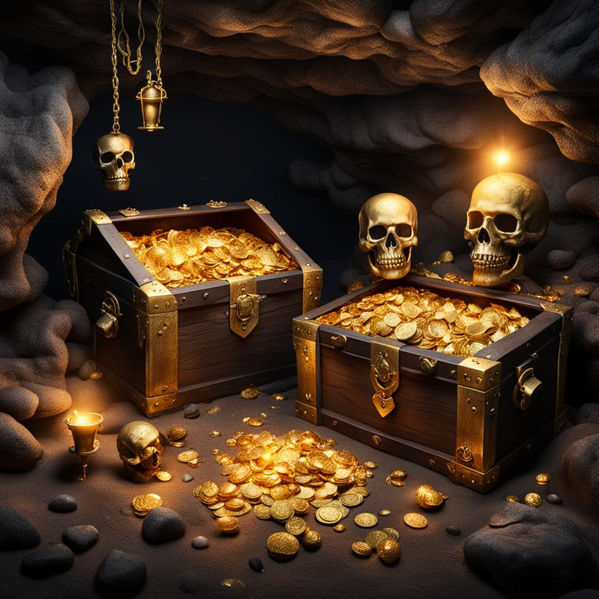On the tenth sun's rise of our daring quest, we unearthed the cursed reaper's chest from its sandy slumber, a foreboding omen of both fortune and treachery. Laden with our spoils, we set our sails for the sanctuary of the Hideout, hungry for gold and respite from the relentless sea. But as we prepared to weigh anchor, a shadow loomed on the horizon - a proud galleon, its cannons bellowing defiance across the waves. With hearts heavy with dread, we braced for the inevitable clash, our swords drawn and our resolve unyielding. Yet, to our bewilderment, the galleon veered from its hostile course, its captain's voice calling out in unexpected accord. Seizing the moment, we extended the olive branch of alliance, our flags intertwining in a dance of solidarity amidst the chaos of the open sea. But our newfound unity was short-lived as not one, but two hostile vessels descended upon us like ravenous sharks scenting blood in the water. Their cannons roared with fury, unleashing a storm of iron upon our beleaguered ship, the air thick with the acrid scent of gunpowder and the cries of the wounded. In the crucible of battle, we fought with the ferocity of cornered beasts, our cannons booming defiance against the onslaught of our adversaries. The deck shuddered beneath our feet, splintering wood and spraying seawater as we danced amidst the chaos of the fray. Yet, through cunning and sheer determination, we emerged battered but unbowed, our enemies vanquished beneath the waves as our ship stood as a testament to our indomitable spirit. With a triumphant cry, we gathered on the deck, our voices raised in a chorus of victory amidst the salt-tinged spray of the open sea. As the stars painted patterns across the night sky and the moon cast its silver glow upon the waves, we raised our tankards in a toast to our fallen comrades and the spoils of our hard-won victory. And though the sea may hold many perils yet unseen, we sailed forth with heads held high, knowing that as long as we stood together, we were truly invincible.
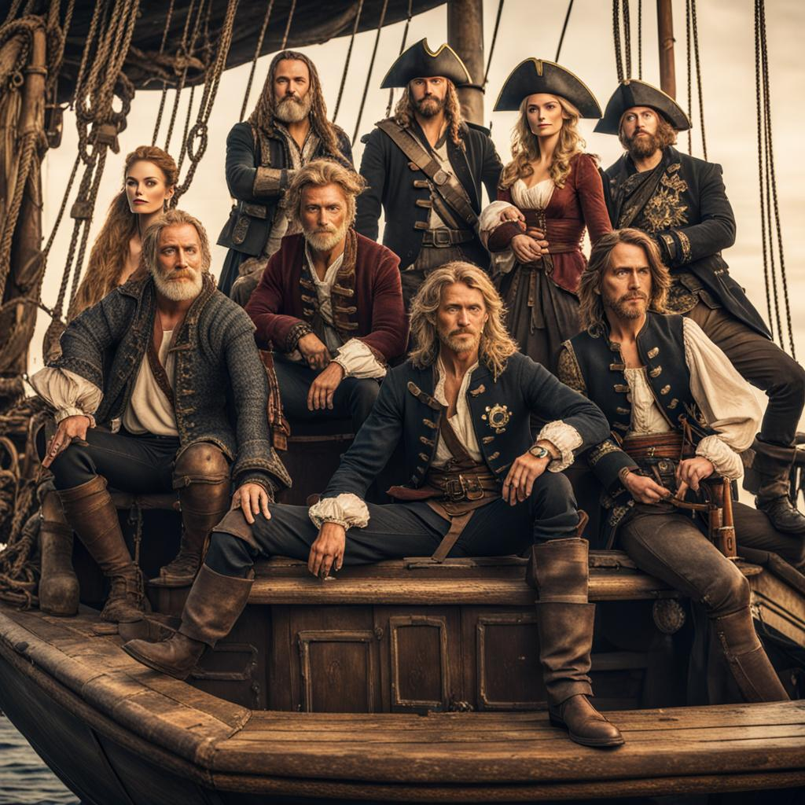Aye, twas day 11 in me saga yet unfolding. This day however, I set sail with a new crew and crewmate. Where before my adventures were marked by me companions Ark, Chaya, and Topenga, today I sailed with me most faithful companion and birdy, a lass named Sparrow. Aye sparrow, small, yet vocal, fast, and ferocious when needed. A lass still new to the seas, but knows her way around the ship. We sailed on the mightyful Mjolnir, leaving port from the grave of gallions surrounding us. As we departed our eyes spotted a note left by a fellow sea goer, stabbed with a small blade into the mast of our Sloop, a note detailing two locations, one near and one far. The former location alleged the site of a powerful key, while the latter alleged the presence of an ancient and forbidden chest containing a cursed skull. This skull however was unlike others from past exploits, as this skull belonged to the illusive species known as Sirens, aye the devils merfolk! With promises of riches and comradarie in heart, me lass Sparrow and I set off on our adventure.
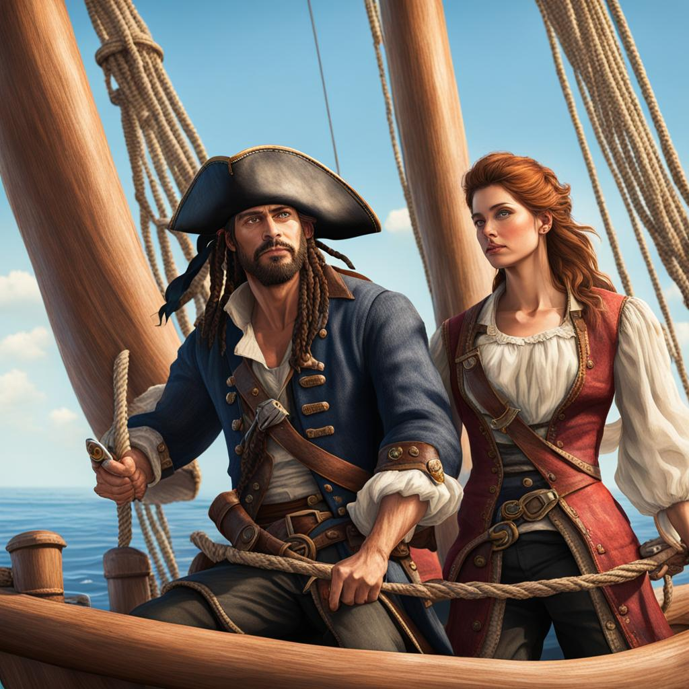It was in the wee morning hours of day thirteen that we stumbled upon a humble isle. Me lovely Sparrow and I searched from the North to the South of the Isle, encountering many a species. There were devious wild hogs, slippery serpents, and scandalous sharks all around. Our bellies however, rumbled with hunger, and such these hostilities were switfy sent to the world beyond so that we may feast upon their flesh. Aye, twas a feast indeed, so much so we nearly forgot the reason as to why we sailed here to begin with. Nonetheless, we followed the words as the note had led, South West twelve paces, South East twelve paces, all from the tallest rock on the isle. It was then, our hurried spades struck something hard in the sand. Aye, twas the key we had been searching for! Just as we stuck it, an series of undead pirates clawed their way up the sand, destined to thwart our exploitive attempts. But me matey and I came prepared, and a fine peppering of blunderbuss and flintlock send them back to the sands where they had came. As we boarding the mighty Mjolnir ready to set sail to our next location and unite the key with the chest, an aweful and terrable roar echoed across the waves. Just as it came, a beam of brisk blue light shot out of the key into the heavens, truly a wonder to behold! But then, oh then, another light the same as ours appeared on the distant fog of the horizon. It would appear a separate crew had similar intentions to ours in spying this ancient piece o plunder.
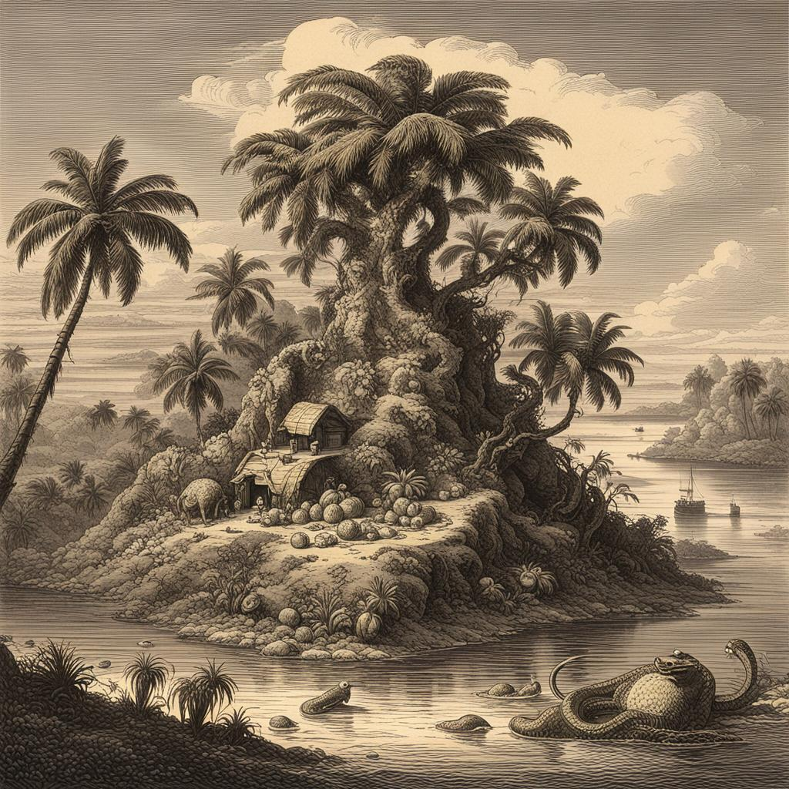As day thirteen began, we raced to the far North West. We did so as the opposite crew was to our South, and to buy a bit of time for planning a defense. You see, neither the key nor the chest has value within it of themselves. Instead the true value lay in what is contained in the chest, and unlocked through the key. While indeed the opposite crew had the chest, me Sparrow and I had the key. As we found ourselves in the most North Western Isle, the Bay of Smuggling, we set anchor in the center pool of a horseshoe isle. Aye twas the same isle from so many moons prior, and twas then I knew we had the advantage. We took the key to the tallest peak on the island, leaving it in a bush but unburied as to allow the light to continue to guide the opposite crew right into our trap. As night closed, we ate and drank fine meats and grog, however as we spied the horizon we noticed the light of the chest had stopped moving. It would appear the opposite crew were setting a trap of their own.
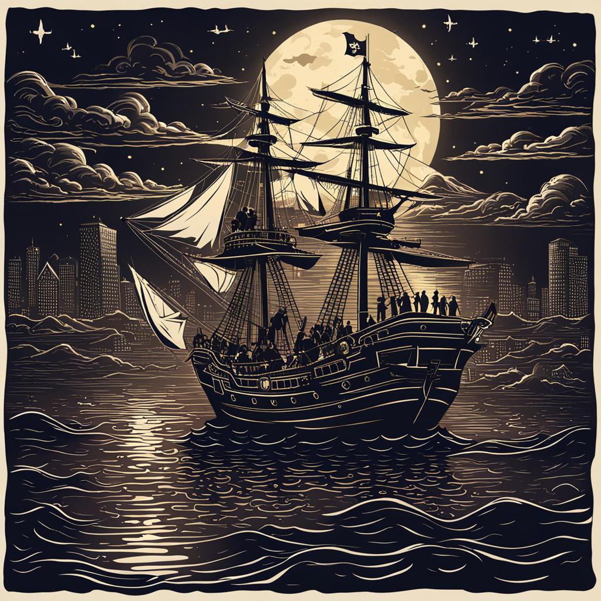Aye, twas the fourteenth day of me trials and triumphs, and today would be the day that we would leave the Bay of Smuggling. As we had left the key in the peaks the day prior, we set sail south-bound to confront the rival crew. We had the key they need, and they had the chest we needed, amnd so, surely between that lies a deal to be made. As we approached their anchored ship, me Sparrow and I spotted about two of their crewmates, with a third coming up from below deck. As we approached we offered an alliance, however the crew seemed highly dis-interested in this endavour. In an act of courageous thievery, I played a tune on me concertina appeasing the rival crew. As I played the shanty and danced with the crew, I ever so slowly managed my way into the belly of their ship, and by davey jones locker was I brought with great surprise. There it be, the chest we had came so far for. I continued my song and looked around with a spying eye, not a rival crewmate in sight, and I knew this be me chance. Hurriedly, I grab the chest with the sirens skull locked inside, and jump overboard landing on the deck of my mighty Mjolnir sloop. "Drop the sails!" I ordered my Sparrow and she hurried to follow me lead. However, a matey from the rival crew unbeknownst to me snuck on board, stealing back the ancient chest. Not only that, but they had brought it back to their own ship, a Brig far faster and with more weaponry than me own humble Sloop. Defeated we plea trying to rekindle the prospect of an alliance, however my thievery likely played a role in their lack of cooperation. With spirits unbroken, we angled the sails with the wind, and had found ourselves just a knot behind the rival crew, now in a race back to the island of which we stashed the key.
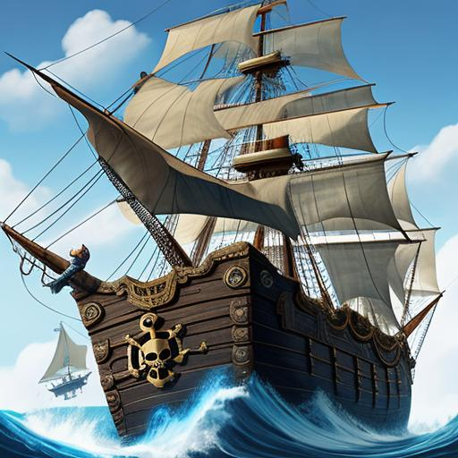As the dawn of day fifteen broke, the rough waves crashed against the hull of our ship. Following just behind them, we could see the rival brig heading full sail into the center pool of the horseshoe island. The crew however, distracted by our pursuit and scrambling to put together a plan found themselves beached on the eastern half of the isle. Aye me and my Sparrow laughed heartedly, for it would appear that fate has landed in our favor. The rival crew jumped ship and found the key, finally bringing it back to their ship and unlocking the ancient chest. I used the moment in one final attempt at allegiance, swimming my way over from my ship to theirs. As I spoke with their captain during Parley, the captain had informed me they were unaware of what to do or who to sell the skull too. I on the other hand knew exactly the perfect buyer. One of their crew brought the chest above deck and laid it down between their cannons, and I thought surely they had taken the skull out. To my surprise, as I popped the chest open I saw shining back to me, the siren's skull which was still inside. I knew me time on their ship was running dry given this newfound discovery, and in haste I knicked the skull and jumped overboard. Oh the screams and anger coming from their ship, twas defining indeed. Musket ball and cannon shot skimmed by me head and body, one shot giving me beard a slight trim. I kept swimming and swimming, and on the occasion rising up above the water to get a breath. As I made way to me ship, me lass had dropped sails before I could get aboard, and me ship went straight into the rock face as the rival crew made cannon shot at us. In haste I went back overboard, swimming to some nearby rocks just south west of the isle, as me Sparrow bee lined it southbound to escape the cannon shot. The rival ship, still trying to get their ship off the beach bought us time to reunite aboard the Mjolnir, as we sailed full sail to the illusive buyer. Aye twas a sight to behold.
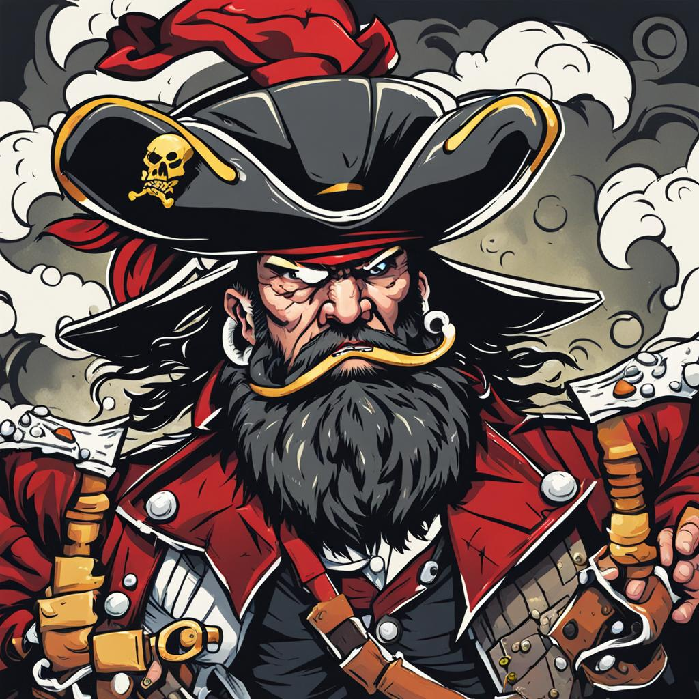Day Sixteen had come fast, as was the angered rival ship on our tail. We pleaded for peace and explained our multiple of attempts at peaceful resolution, however the rival crew had no interest in our pleas. Cannonshot and chainshot nearly missed our hull and mast as we pushed southward through the choppy waves. As the now hostile brig approached our rear, I knew we had to do something or else we'd be dining with Davey Jones tonight. In quickened haste, I grabbed some firebombs and lept into the water, waiting patiently for the rival brig to approach. As it did, I threw everything at them that I had on me, lighting their hull and masts ablaze! Aye, the way their ship crisped and fell bit by bit into the sea was glorious! They had but no choice to retreat to the nearby outpost, else they fall to the icy depths below. As they turned around and changed course, me Sparrow and I danced and laughed joyously, making way to the buyer of the siren skull. Just as we neared and night had fallen upon us, a great roar filled the empty night with sound, and before we knew it, a fin as black as the night slammed into the side of our ship. Twas a megalodon darker than any I've seen before, it moved like a shadow but struck hard like rock. We loaded our cannons with shot and harpooned the beast in its tail, giving us the chance of both slowing its speed while also opening up a firing angle. As me Sparrow manned the cannons, I used me trusty rifle, striking the beast many a time. We fought throughout the night until our shot had begun running dry, and with one final shot to the gills, the shadow beast had been slain. As we chopped and fried the meat aboard the Mjolnir, a rainstorm came upon us, so we skipped our way to a small cay and batoned down the hatches for the night.
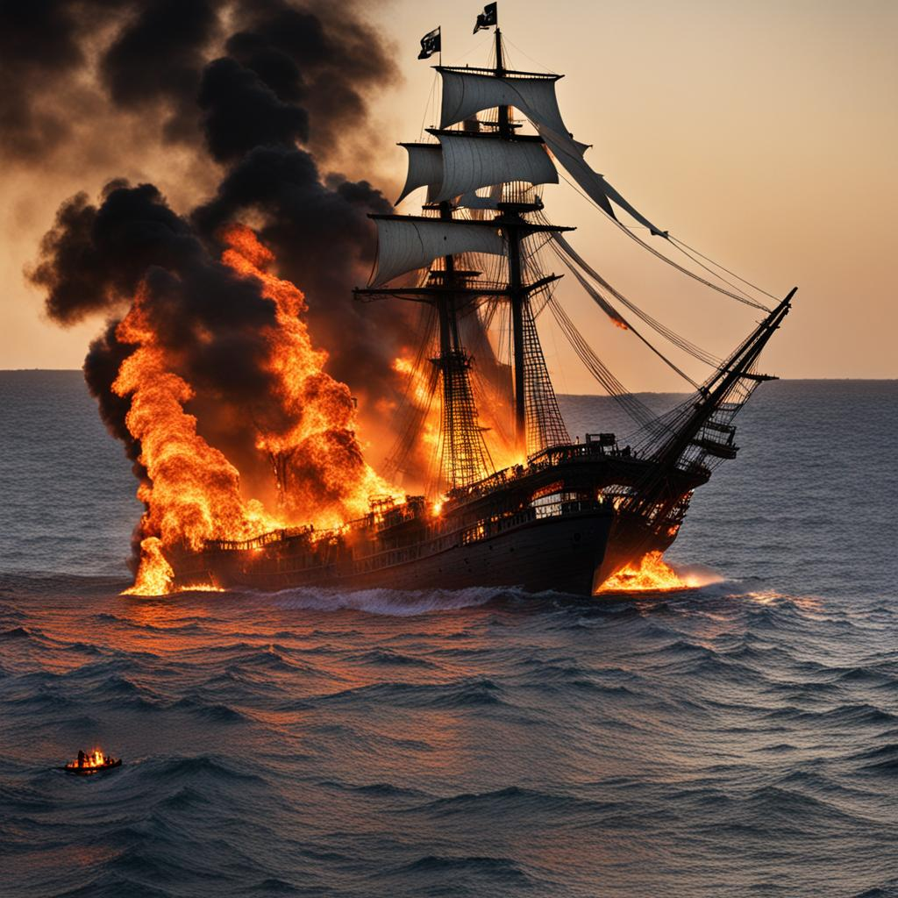We woke around noon on day seventeen just as the storm overnight had passed. We only had a few more knots westward to the buyer of the cursed skull, and seeing as we did not want our pursuers from prior the opportunity of knicking back the plunder, we continued on our journey full stail. As we arrived at the promised isle, we came into dock at the central port. We made sure to achor with our broadside to the sea so that any potential adversaries may be swiftly handled with. Seeing as the coast was clear, we made our way off ship following a thin and sandy trail. The trail led to a cave, and following the dimly lit lanterns until we met a dead end. Just as we came to the end, a familiar voice could be heard, the illusive buyer. Aye, twas a most excellent site, after such trials and close calls to have this cursed skull finally meet its final owner. Me Sparrow and I were each provided a months payment for our efforts, and one could imagine the joy from the acquirement of such splendor. As we made our way back to the Mjolnir, we clinked tankards and shared a drink under the tangerine setting sun. Seeing as we didn't want to lollygag, we made way for a rock just on the visible horizon, and at the rock we dropped anchor for the night content in our newfound wealth.
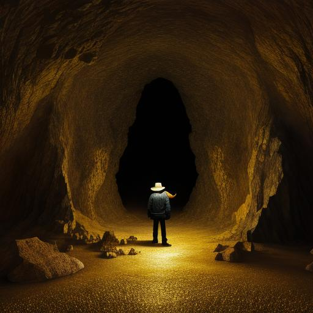The morning of day eighteen was marked by the trumpet of cannon fire. Twas from our starboard side the cannons were heard first, but then from the portside also. Just as confusion began to set in, a shot came piercing straight through the hull. By lucks fortune it had missed the waterline, and in haste me Sparrow and I nailed planks to buy us time. With a bucket in one hand and a makeshift cone in the other, I bailed the hull from the flooding water pleaing to our mysterious attackers. There I plead, "I call for a Parley, we mean no harm, we only seek an alliance." Just then, the shots ceased, and our ship was approached by two of the same class. After some short discussion and them having explained they mistook us for reapers, we were invited to their two ship fleet. Now at a size of three, our fleet head eastward into the dangerous yet plunderful waters. We sailed not two knots before stopping at a bountiful cay, stopping to fill our ships with coconuts, wood for repairs, and fine wild citrus to fight scurvy. Night grew closer and we anchored for the night, of course, engaging in a fine shanty before drinking ourselves to sleep.
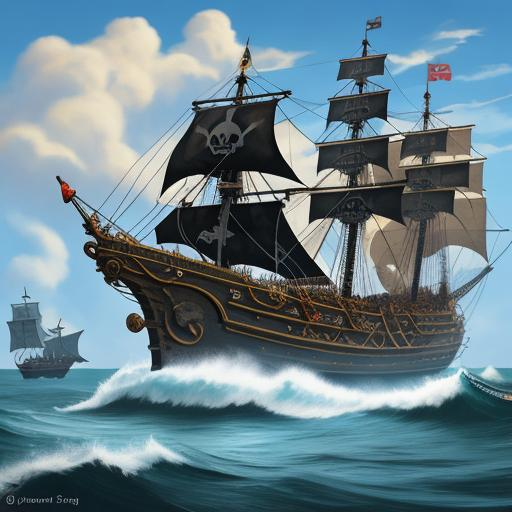The morning of day nineteen was marked by much of the same, again we are awoken by the sound of cannonfire, but this time not by fellow pirates but instead an undead fleet. It would appear as if the entire spanish armada had been upon us, cannon fire and screams filled the break of dawn, and many a ship were ablaze. Me Sparrow and I rose the anchor and dropped sails, ready to engage the foul beasts of the afterlife. A galleon approached our port side, and me faithful Sparrow swiftly placed a barrage of shot into their water line. Aye, and as they passed our bow, the lass harpooned their stern so that they couldn't escape. Time was growing short as our allies were taking heavy damage, and so I left the ship to me Sparrow as I boarded the undead vessel. They were nearly three quarters full as I went below deck, such a fowl stench those skellies let off, but I couldn't let them repair as it would only lead to our demise. I held me breath and went into the water with me sword extended full. One by one their bones sank to the bottom of their cursed ship, me Sparrow continuing to keep the pressure with cannon fire. As the galleon sank, me Sparrow came along side so that I could grab some stray rope and pull meself aboard. With me Sparrow's help I came aboard and together hauled up whatever was floating and shiny. Aye for the undead they sure had some fine plunder left for us. After the grand naval battle, our fleet came together and made a plan moving forward, that be we sail under the same banner but to different fortresses, as so to maximize the plunder we gain. We agree and part ways for now, with the promise to return by the end of day tommorow to our hideout.
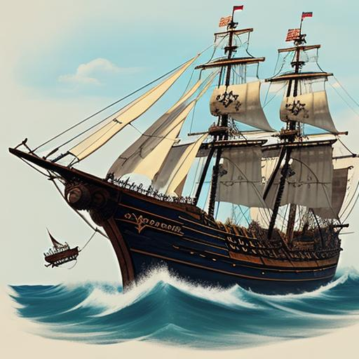The twentieth day started first as a day of peace. The sea was calm, and wind was in our favor. We hed eastward as rumors spread of a cursed fortress. As we approached the ghastly isle, cannon shot came furiously our way. Twas four or five shots we weaved between before coming to port. As we left ship, the clashing of cutlasses filled the air, as one by one we slay ghastly manifestations. We continued our way from the chow hall to the barracks, and it was there we refilled our shots. Me Sparrow had her trusty Blunderbuss, as I had me trusty flintlock. As we made our way to the tower of the fortress, it was there we saw the spirit of the captain of the fort. First me Sparrow shot, and then I, before we both switched to our cutlasses ready to engage the premonition. We sliced in unison making minced meat of the ectoplasmic entity, and as our final blows struck, the key to the forts treasury dropped from their pocket. In haste, we ran to the bottom most floor, unlocked the vault, and began offloading the plunder onto our ship. With each chest of gold and fine gems we placed aboard a wave rippled in the sea, a testament to the weight of our actions. As night was falling, we met our allies at our designated meet, and began to off load and count our plunder. Aye twas the most bountiful day me pirate eye has ever seen in all me years sailing the high seas. We lowered our flags, said our farewells, and set sail for new waters.
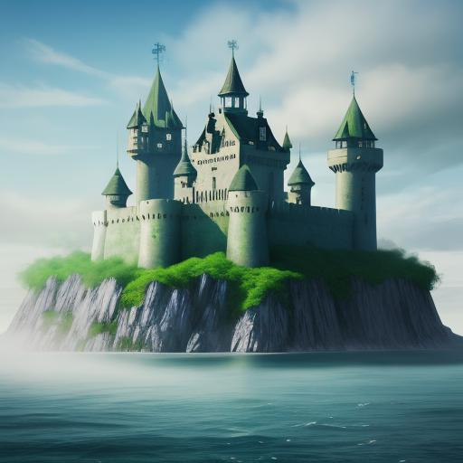Audiobook Part 1 : Days 1 - 10
Audiobook Part 2 : Days 11 - 20